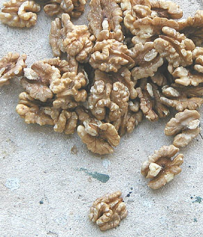

Les huiles
de noix
Certains peintres l'utilisent toujours de nos jours,
souvent comme composant de médiums.
Caractéristiques
générales
Elle est pratiquement incolore. Sa fluidité n'a rien de très
particulier contrairement à ce qu'affirment certains auteurs (sauf variétés
particulières, peut-être).
Sa siccativité se situerait entre celle de
l'huile de lin et celle de l'huile d'oeillette. Elle peut être
augmentée par l'adjonction de litharge. D'ailleurs,
c'est très souvent le cas, l'huile de noix servant beaucoup plus dans la
fabrication d'adjuvants que comme huile à peindre.
L'huile
de noix a acquis, à tort ou
à raison, la réputation de rancir (jaunir, devenir odoriférante), à cause de sa
forte teneur en acides gras essentiels (notamment en acide
linolénique), dit-on. Certains
opposent une opinion plus favorable : elle jaunirait moins que l'huile de lin. Parmi
nos contacts, nul n'a constaté de rancissement. Si vous avez expérimenté ce
phénomène, merci de nous le faire
savoir.
 Un
premier témoignage donne des éclaircissements
Un
premier témoignage donne des éclaircissements
Lien in Courrier des Lecteurs
L'huile
de lin jaunit dans l'obscurité mais redevient limpide à la lumière.
L'avantage comparé de l'huile de noix consisterait donc en une absence de
photosensibilité combinée à une siccativité assez bonne, ce qui la ferait
ressembler à l'huile d'oeillette ou à l'huile de carthame ainsi qu'à quelques autres.

Attention à la qualité
* la qualité "huile de cerneaux de noix
émondés"
(triés, débarrassés des impuretés ligneuses, une qualité alimentaire,
comme sur la photo ci-contre) est bien supérieure à la
variété ordinaire - souvent chauffée au pressage - qui est acide, sombre
et moins siccative. C'est la variété "cerneaux émondés" qui
jaunit le moins.
* le terme "huile de noix vierge" est
trop vague. On ignore, avec une telle appellation, si les cerneaux ont été
ou non émondés.
* certains fabricants proposent une huile de cerneaux de noix émondés
puis cuite à la litharge, soit une huile noire de bonne qualité.
Il s'agit d'un produit d'origine ancienne évoqué
ci-dessous.
Dans tous les cas, une démarche s'impose : le test préalable au papier
tournesol.
L'huile noire
A
base d'huile de noix et de
siccatif (litharge), elle semble avoir
souvent été le liant des fonds rouges et gris de la Renaissance, ou du moins un
adjuvant important. Elle autoriserait
aussi des "jus" très siccatifs.
Une recette :
* huile de noix (8 parts)
* litharge (2 parts)
Les mesures sont exprimés en poids et non en volume.
Cette huile aurait été utilisée très tôt par certains maîtres
vénitiens en conjonction avec de la cire, limitant l'aspect coulant de ce liant
effectivement lourd à cause de la présence de plomb. Il s'agit du fameux
médium vénitien. De nos jours encore, il n'est pas rare qu'un professeur de
peinture à l'huile préconise un adjuvant cireux (parfois des vernis) pour une
huile noire.
De même, des recettes flamandes mettent une huile noire à
contribution dans la fabrication de médiums, notamment le célèbre
médium flamand à base de
résine mastic.
Caractéristiques
physiques de l'huile de noix
Mises à part les
variétés particulières évoquées ci-dessus, l'huile de noix communément
utilisée en peinture a une densité de 0,926 à
0,927. Point de congélation : -27°. Point d'ébullition proche de celui de
l'huile de lin, vers 386°.
(données Xavier de Langlais).
Les diluants sont
ceux de toutes les huiles : les essences
principalement.
L'huile de Canton
et l'huile d'abrasin : huiles d'autres noix
Cette section est ponctuée de verbes au conditionnel.
L'enquête est en cours.
Nous espérons pouvoir présenter prochainement des informations plus précises.
Huile
de Canton, huile d'abrasin, huile de bois de Chine ou huile de bois, huile de toung, de tung
(orthographe utilisée dans les documents légaux) ou de tang
-, il semble que ces appellations confuses et probablement erronées
désigneraient souvent le même produit en Occident - alors que ce n'est
peut-être pas le cas en Chine (cf. L'huile
de bois de Chine) ni dans le reste de l'Asie et de l'Océanie.
Il s'agirait de l'huile de la noix
de l'arbre tung ou plutôt de différentes espèces d'aleurites (voir
ci-dessous). Elle est utilisée
notamment pour réaliser
des vernis de haute qualité en décoration. On mentionne également sa présence
dans certains vernis marins et certaines encres, ainsi que dans des papiers
imperméabilisés. Très brillante, elle serait
fort solide. Elle présente une particularité remarquable : ester de l'acide élaéostéarique, elle dispose de trois doubles liaisons et tire de cette
insaturation une siccativité particulièrement
remarquable.
Une cuisson à 200-300°C, pratiquée lors du
conditionnement du produit commercialisé permettrait de réduire en partie
cette siccativité tantôt pénalisante, tantôt recherchée.
D'odeur
désagréable, elle serait non toxique mais pourrait présenter certains dangers d'ignition.
Lire passage in Les huiles.
Le produit vendu en Occident sous
l'intitulé "huile d'abrasin"
correspondrait à une huile destinée à la finition et la protection du bois
qui serait particulièrement résistante à l'eau et aux alcalis
(donc à l'eau de mer en effet) et protègerait de la rouille les métaux
ferreux (auxquels elle adhèrerait bien).
Elle pourrait
être polie et cirée ou traitée à l'aide d'une "standolie
d'huile d'abrasin" (huile d'abrasin polymérisée dans l'absence d'oxygène).
L'huile de bois de Chine correspondrait à
un autre arbre de la même famille des aleurites, qui fournissent toutes des
huiles fort siccatives issues des graines de ces végétaux. Il semble qu'il
existerait cinq variétés de cette branche des euphorbiacées, poussant
naturellement de l'Asie centrale à l'Extrême Orient en passant par la
Malaisie (bancoulier) et l'Océanie. Elle est aujourd'hui cultivée en d'autres lieux.
Dans tous les cas semble-t-il, à partir des graines broyées, on obtient une
huile de bois noire par un processus de torréfaction et un huile blanche,
réputée plus neutre chromatiquement que l'huile de lin (information non
confirmée),
sans torréfaction.
Retour
début de page